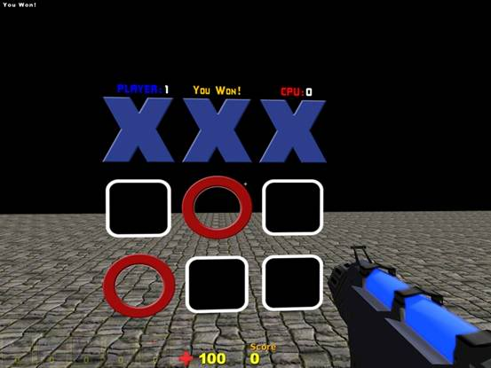
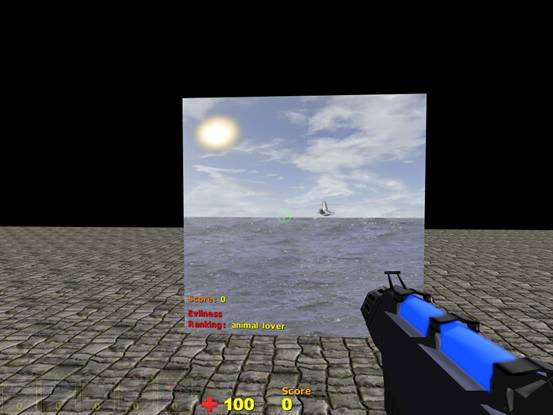

Eventually, with help from others, I’ll be creating an arcade parlor world with various scripted panel games in it. Once I have an arcade machine model I’ll create a blank template world that can be used by others who wish to donate their own games to the parlor. I’m thinking that the best way to do this is by saving all the scripted games in their own separate world file and placing them in the parlor world via reference worlds. The template world would simply contain the arcade machine model with a blank panel item positioned appropriately on the arcade screen.
If anyone wants to contribute an arcade machine model, please consider the following:
- The screen would need to be 0.5 meters x 0.5 meters in size so that a decently sized panel item can be superimposed on top.
- The screen, which is where the panel item will be placed, needs to be perfectly flat/planar.
- The height of the machine needs to coincide with the default C4 player character in a fashion so that it is comfortable to stand and interact with the panel. I find that having the screen sitting 1 meter off the ground is about right.
- Please allow adequate room on the top panel of the machine for contributors to place the name of their game. This may be in the form of another C4 panel item or perhaps a texture that can be easily swapped out.
What I’d really like is for someone to create the arcade parlor world, where all the arcade machines would reside. MachineGun Frank, would you be able to help with this (pwease)?
PM me if you want to help or contribute. I’m not reliable with email so please stick to PM’s. I have limited internet access so don’t be offended if it takes me a little bit to get back to you.
To install place the zip file within your Data folder and extract. The script relies on texture names and paths so please don’t rename any folders or files within the zip. All future releases share the same folder structure for ease of installation.
I highly recommend changing the default FOV from 60 to something higher. 75 is nice. It makes interacting with panels a whole lot smoother and easier.
Do this by typing $fov = n in the console where n = desired fov. To save the setting, open the graphics manager and hit the apply button. This will store the fov variable to the variables configuration file.
Download naughts and crosses + digital clock files here: http://www.sentinelgames.com/download/C4/ScriptedGames.zip
Download Bird Hunt here: http://www.sentinelgames.com/download/C4/BirdHunt.zip
To install place the zip file within your Data folder and extract. The script relies on texture names and paths so please don’t rename any folders or files within the zip. All future releases share the same folder structure for ease of installation.
Naughts & Crosses

A simple game of naughts and crosses. Features player and CPU scoring and a reset button to restart the game if desired. Winning pieces will flash once a game has been won and a draw will automatically reset to a new game after a brief notification.
The CPU’s moves are loosely based on the following:
- First randomly generate a number that corresponds to one of the 9 squares.
- Check if this square is empty. If not then loop through again until we find an empty square. If we can’t find an empty square and no one has won the game, it must be a draw. Restart the game.
- Check to see if CPU has two pieces in a row. If a 3rd winning square is not occupied then go for the win.
- If no winning moves are possible then check to see if the player has two pieces in a row. If there is a chance for the player to win try to block it.
- If no move can be determined from the above rules, simply place a piece within a random square as long as that square is not occupied.
There are 10 scripts for this one. One on each square that is responsible for placing a player’s piece and determining the next move by the CPU. The other script, in the form of a connection marker (both the game panel and connection marker are linked to each other) is responsible for determining a win, a draw, playing music, incrementing scores, game messages, restarting the game and flashing winning pieces.
24 Hour Digital Clock
Not much to explain here. A simple 24 hour clock with hours/minutes/seconds. The starting time is specifiable from variables within the script.
Bird Hunt

A simple shooting game. An animated bird flies horizontally across the screen and by using your mouse as a gun, see if you can make him go splat. Features scoring, blood and death, a nice pretty beach background with animated water, clouds and a sun, various sounds and a scientifically based formula to determine your “evilness ranking”. See how evil you can become by playing this game!